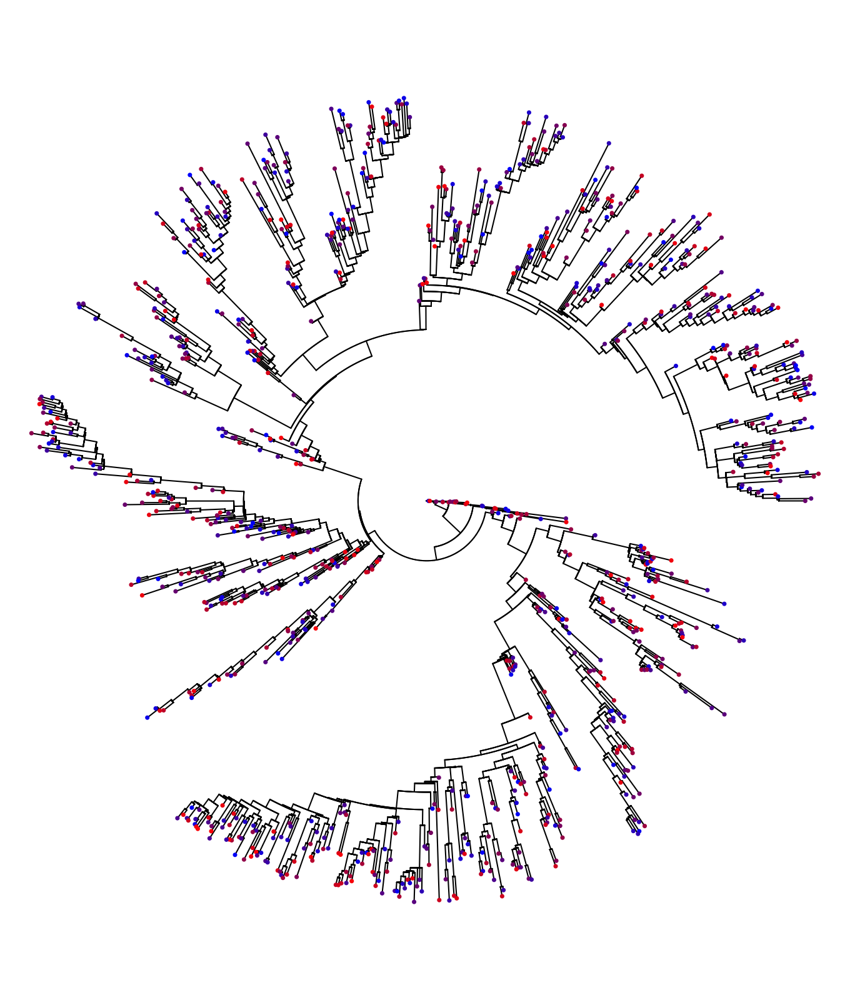
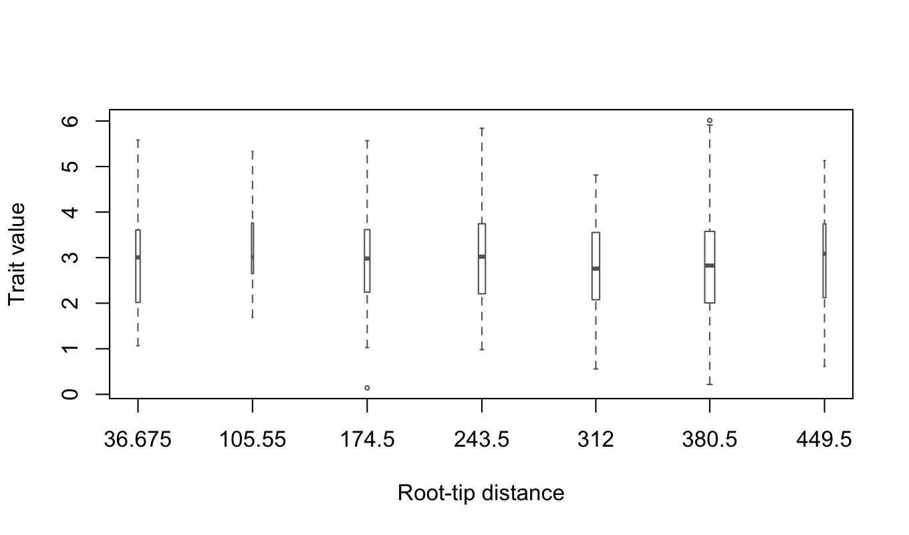
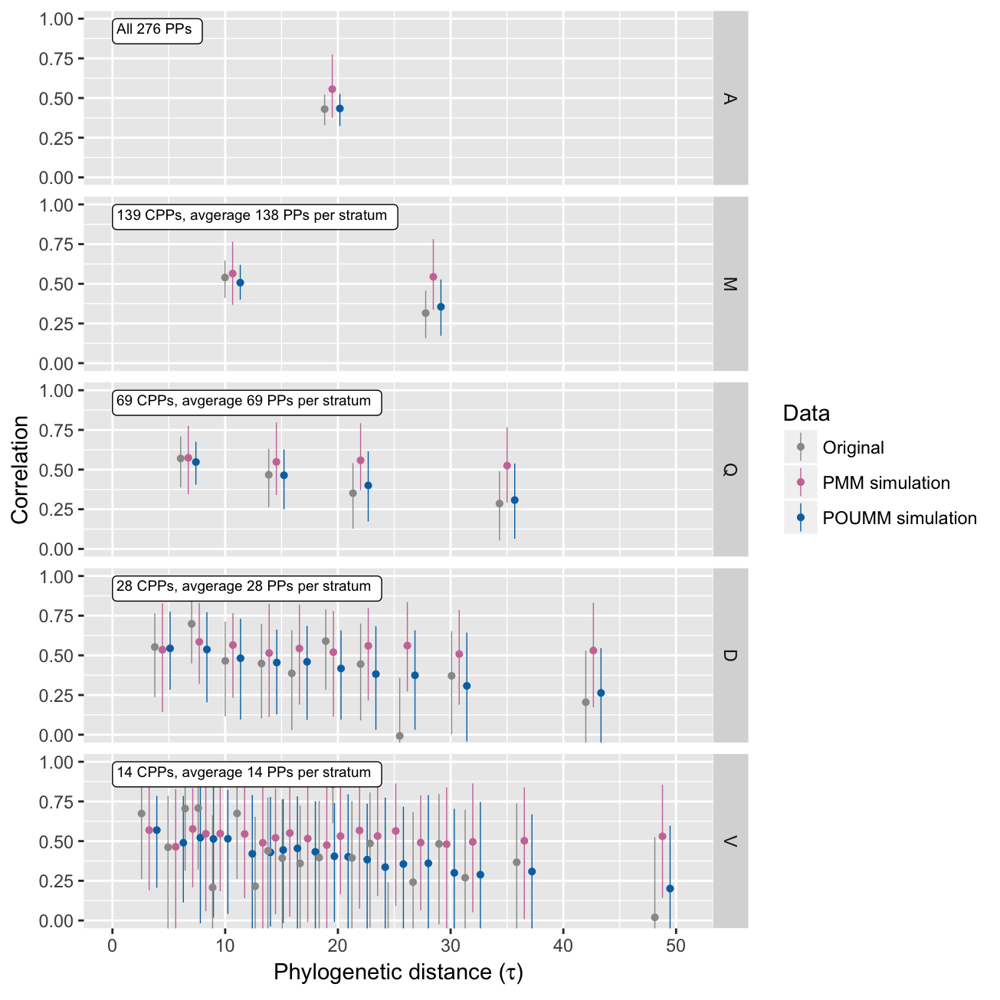

Thus, the heritability is a number in the interval [0,1]. The closer \(H^2\) is to 1, the higher is the importance of the pathogen genotype versus the host immune system in the formation of the trait. The input data represents a transmission tree connecting a set of infected patients and the patient’s trait-values, measured at the moment of diagnosis. The patherit package evaluates phylogenetic comparative estimators, i.e. \(H_{\bar{t}}^2\), \(H_{\infty}^2\) and \(H_e^2\) from the PMM and POUMM methods, and pair-correlation estimators, i.e. \(r_A\) from the ANOVA-CPP method (Mitov and Stadler 2016). The main reason for using different estimators is the need to gain certainty in the estimates and to eliminate potential sources of bias, (e.g. within-host evolution and wrong model assumptions), which can obfuscate the true value of \(H^2\) (Mitov and Stadler 2016).
For the purpose of this tutorial, we will use the toy-model epidemic simulated in the User guide of the toyepidemic package.
load("epid1.RData")The code-snippet below extracts the exact transmission tree connecting a set of diagnosed patients during a simulated epidemic outbreak.
tree <- toyepidemic::extractTree(epidemic)
# a data.table containing the host-type (env), the infecting strain (gene) and the
# host specific effect (e) for each infected patient.
pop <- toyepidemic::extractPop(epidemic, ids=tree$tip.label)
# use the function calcValue from the toyepidemic package to extract the trait
# value for each sampled patient.
pop[, z:=toyepidemic::calcValue(env, gene, e, GEValues=epidemic$GEValues)]
# arrange the trait values in order of the patient-labels in the tree and store
# them in an external vector.
z <- pop[list(tree$tip.label), z]plot(ape::ladderize(tree), show.tip.label = FALSE, type="fan", no.margin = TRUE)
colorFunc <- colorRampPalette(c("blue", "red"))
colors <- colorFunc(length(tree$tip.label))
ape::tiplabels(NULL, tip=1:length(tree$tip.label), pch=20, col=colors[order(z)], cex=0.5)
Qualitatively, the heritability of the trait manifests itself in the similar color for closely related patients on the transmission tree. This is because closely related patients such as closest phylogenetic pairs (CPPs) tend to carry identical pathogen strains.
patherit::boxplotTraitAlongTree(z, tree, nGroups = 8, boxwex=6)
The absence of a noticeable trend and the relative symmetry of the box-whiskers around the medians suggest that the trait distribution is approximately normal and stationary throughout the epidemic. Thus, we should expect that the POUMM estimates \(H_{\bar{t}}^2\) and \(H_{\infty}^2\) should be approximately equal.
# start a parallel cluster for parallel execution of MCMC chains in the POUMM
# and PMM fits (explained in the vignette for the POUMM package).
cluster <- parallel::makeCluster(parallel::detectCores(logical = FALSE))
doParallel::registerDoParallel(cluster)
H2Analysis <- patherit::estimateH2(z, tree,
methods = list(
PP = list(bootstraps=100, verbose=FALSE),
POUMM = list(nSamplesMCMC = 5e5,
verbose = FALSE),
PMM = list(nSamplesMCMC = 5e5,
verbose = FALSE)))summary(H2Analysis)[stat%in%c("rA", "H2tMean", "H2e", "H2tInf")]## method tauQuantile N K stat MLE PostMean CI.lower CI.upper tauMean filter
## 1: PP V[0%,5%] 28 14 rA 0.67 NA 0.26 0.88 3.3 all
## 2: PP D[0%,10%] 56 28 rA 0.55 NA 0.24 0.76 4.4 all
## 3: PP O[0%,12%] 70 35 rA 0.55 NA 0.27 0.74 4.9 all
## 4: PP qu[0%,20%] 112 56 rA 0.63 NA 0.45 0.77 6.1 all
## 5: PP Q[0%,25%] 138 69 rA 0.57 NA 0.39 0.71 6.7 all
## 6: PP M[0%,50%] 278 139 rA 0.54 NA 0.41 0.65 10.7 all
## 7: PP A[0%,100%] 552 276 rA 0.43 NA 0.33 0.52 19.5 all
## 8: POUMM NA 1000 NA H2tMean 0.62 0.62 0.49 0.74 NA NA
## 9: POUMM NA 1000 NA H2e 0.61 0.60 0.47 0.73 NA NA
## 10: POUMM NA 1000 NA H2tInf 0.62 0.62 0.49 0.74 NA NA
## 11: PMM NA 1000 NA H2tMean 0.70 0.69 0.56 0.81 NA NA
## 12: PMM NA 1000 NA H2e 0.35 0.34 0.25 0.44 NA NA
## 13: PMM NA 1000 NA H2tInf 1.00 1.00 1.00 1.00 NA NAIt is useful to observe the correlation between phylogenetic pairs as a function of their phylogenetic distance. In the absence of convergent evolution towards the same pathogen, the sequence similarity between transmission partners is supposed to decrease with the time since the transmission events. This is reflected by a decay in the trait correlaiton between transmission partners and phylogenetic pairs, respectively. The correlation profile represents a suite of estimates of the intra-class correlation (\(r_A\)) in a stratification of the phylogenetic patients by their phylogenetic distance. The patherit package allows to produce such a profile for the original data, and for data simulated under the ML fits of the POUMM and the PMM. This is done with the patherit::corrProfile() function:
corrPr <- patherit::corrProfile(H2Analysis)Then, we use the function patherit::plotCorrProfile() to plot the correlation values in different stratifications (medians, quartiles, quantiles, deciles, etc…):
patherit::plotCorrProfile(H2Analysis, corrPr) Notice that the PMM estimates remain high for all phylogenetic distances, while the true data and the simulations under the POUMM ML fit are showing a decline in the correlation between phylogenetic pairs with phylogenetic distance. This shows that the PMM cannot model the decay in correlaiton (Mitov and Stadler 2016).
For the toy-model simulation, we know the true value of \(H^2\). This is given by the direct estimator - the coefficient of determination, \(R_{adj}^2\), calculated over a grouping of the host population by identical infecting strain:
R2adj(data=pop, activeOnly = TRUE)## [1] 0.55We see that the true value falls well within the 95% CI of all estimators except, the estimators \(H_e^2\) from the PMM method. This is due to the fact that the PMM has over-estimated the non-heritable variance \(\sigma_e^2\) - another manifestation of the PMM’s inability to model the decay of correlation between phylogenetic pairs.
The randomization test consists in checking that the estimated heritability is insignificant if the trait values have been shuffled randomly between the sampled patients:
pop[, z2:=sample(z)]
zR <- pop[, z2]H2AnalysisR <- estimateH2(zR, tree,
methods = list(
PP = list(bootstraps=100, verbose=FALSE),
POUMM = list(nSamplesMCMC = 5e5,
verbose = FALSE),
PMM = list(nSamplesMCMC = 5e5,
verbose = FALSE)))
parallel::stopCluster(cluster)summary(H2AnalysisR)[stat%in%c("rA", "H2tMean", "H2e", "H2tInf")]## method tauQuantile N K stat MLE PostMean CI.lower CI.upper tauMean filter
## 1: PP V[0%,5%] 28 14 rA 0.3049 NA -0.232088 0.705 3.3 all
## 2: PP D[0%,10%] 56 28 rA -0.0180 NA -0.378504 0.350 4.4 all
## 3: PP O[0%,12%] 70 35 rA -0.0559 NA -0.375187 0.277 4.9 all
## 4: PP qu[0%,20%] 112 56 rA -0.0227 NA -0.280461 0.239 6.1 all
## 5: PP Q[0%,25%] 138 69 rA -0.0872 NA -0.314903 0.150 6.7 all
## 6: PP M[0%,50%] 278 139 rA 0.0106 NA -0.155350 0.176 10.7 all
## 7: PP A[0%,100%] 552 276 rA 0.0283 NA -0.089757 0.146 19.5 all
## 8: POUMM NA 1000 NA H2tMean 0.0000 0.0658 0.000065 0.212 NA NA
## 9: POUMM NA 1000 NA H2e 0.0019 0.0597 -0.075000 0.231 NA NA
## 10: POUMM NA 1000 NA H2tInf 0.0000 0.0664 0.000065 0.212 NA NA
## 11: PMM NA 1000 NA H2tMean 0.0000 0.0167 0.000020 0.054 NA NA
## 12: PMM NA 1000 NA H2e 0.0010 0.0051 -0.077709 0.094 NA NA
## 13: PMM NA 1000 NA H2tInf NaN 1.0000 1.000000 1.000 NA NApop[, z:=z2]
# should be insignificant
R2adj(data=pop, activeOnly = TRUE)## [1] -0.0017Apart from base R functionality, the patherit package uses a number of 3rd party R-packages:
Canty, Angelo, and Brian Ripley. 2016. Boot: Bootstrap R (S-Plus) Functions. R-Package. https://cran.r-project.org/web/packages/boot/index.html.
Dowle, Matt, and Arun Srinivasan. 2016. Data.table: Extension of ‘Data.frame‘. https://CRAN.R-project.org/package=data.table.
Mitov, Venelin, and Tanja Stadler. 2016. “The heritability of pathogen traits - definitions and estimators.” Unpublished Data https://www.biorxiv.org/content/early/2016/06/12/058503.
———. 2017. Fast and Robust Inference of Phylogenetic Ornstein-Uhlenbeck Models Using Parallel Likelihood Calculation. BiorXiv. http://biorxiv.org/content/early/2017/05/30/115089.
Paradis, Emmanuel, Simon Blomberg, Ben Bolker, Julien Claude, Hoa Sien Cuong, Richard Desper, Gilles Didier, et al. 2016. Ape: Analyses of Phylogenetics and Evolution. https://CRAN.R-project.org/package=ape.
Wickham, Hadley. 2016. Testthat: Unit Testing for R. https://CRAN.R-project.org/package=testthat.